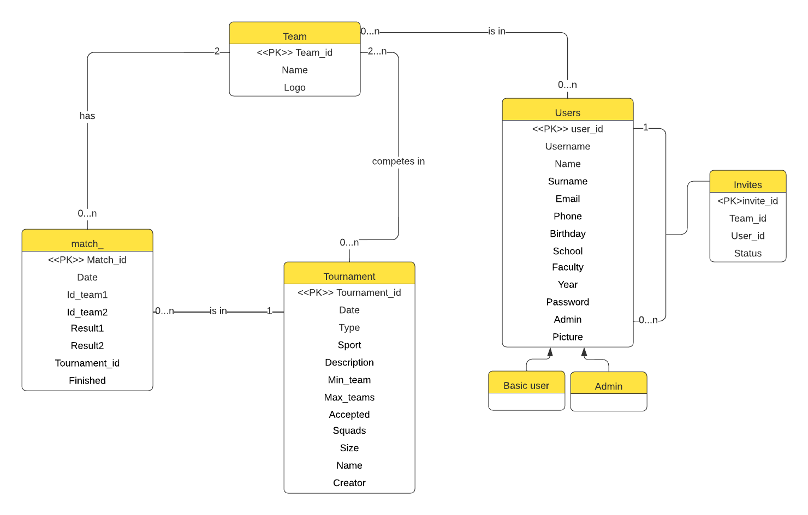

Studentské turnaje (tým: Putovní Cibule)
- Autoři
- Adam Cologna
xcolog00@stud.fit.vutbr.cz -
neregistrovaný uživatel, registrace (backend), přihlášení (backend)
- Tomáš Souček
xsouce15@stud.fit.vutbr.cz -
týmy, pavouk, losování zápasů, celkový návrh designu informačního systému
- David Kocman
xkocma08@stud.fit.vutbr.cz -
turnaje, admin, registrace (frontend), přihlášení (frontend)
- URL aplikace
- http://pucis.unas.cz/index.php
Uživatelé systému pro testování
| Login | Heslo | Role |
|---|
| admin | random | Admin |
| Venca123 | random | Přihlášený na turnaj |
| jannov | random | Správce turnaje |
Video
Odkaz na komentované video
Implementace
- index.php je samozřejmě hlavní stránka a slouží hlavně pro přesměrování na ostatní.
- db_operations.php je rozhraní pro operace s databází MySQ.L
- Soubory admin obsahují implementaci admín stránek informačního systému.
- login.php a registrace.php umožňují přihlášení a registraci uživatelů.
- Turnaj soubory obsahují implementaci správy, vytváření, editaci, schválení, vytváření a mazání turnajů. Také zadávání jednotlivých výsledků utkání a vytváření pavouka. Přihlašování týmů a jednotlivců na turnaj.
- Soubory pro týmy umožňují vytváření, editaci a mazání týmů, pozívání hráčů do týmu.
- users.php obsahuje výpis všech uživatelů pro nepřihlášeného uživatele.
- utils.php obsahují pomocné funkce které jsou sdílené ve více souborech.
Ve složce model se nachází php soubory, které slouží jako backend pro dříve zmíněné soubory.
Obsah souborů kaskádových stylů ve složce css určují vzhled stránek.
Databáze

Instalace
- Co se týče instalace na server, tak doporučujeme otevřit přímo adresu, na kterou bylo vše nahráno.
- Jinak doporučený postup je odzipovat odevzdaný soubor a umístit jej do složky, kde je nakonfigurovaný PHP server.
- Žádný framework nebyl využit, takže stačí PHP verze 8.1 a vyšší.
- Pro nastavení databáze je potřeba importovat iis.sql soubor do správce vaší databáze. V souboru db_operations.php je případně potřeba změnit proměnné $servername, $username a $password.
Známé problémy
Databáze není zabezpečena proti SQL útokům.